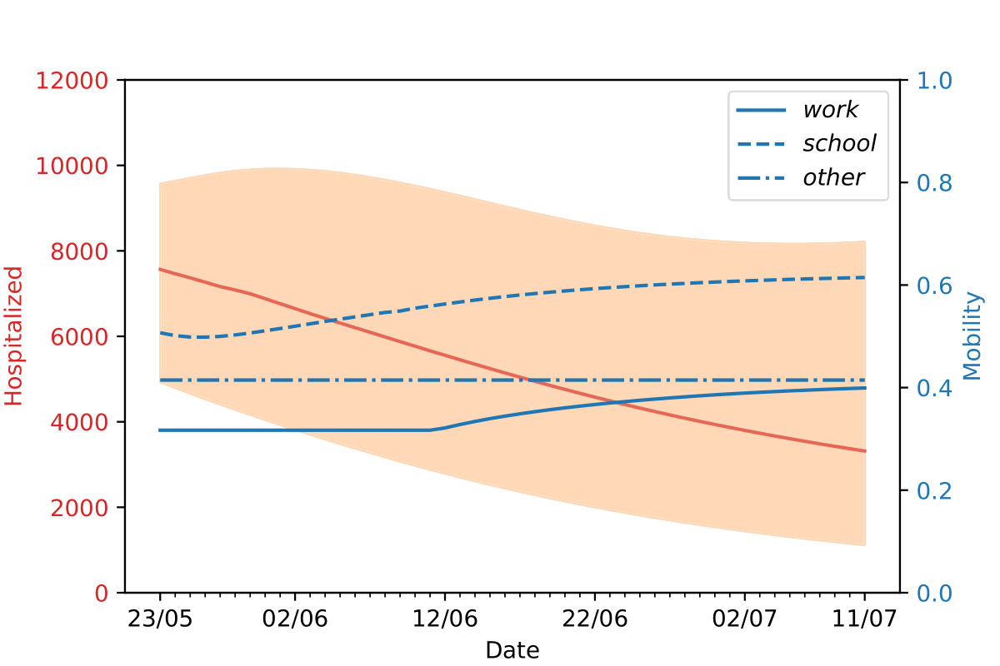
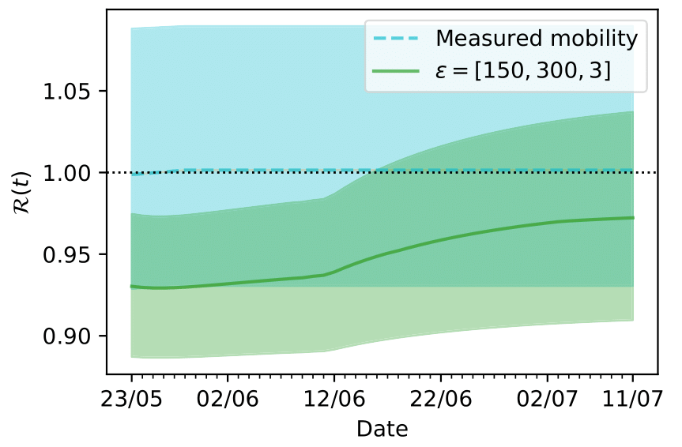

Proposed lockdown strategy for England (23rd May)¶
Optimal lockdown strategy¶
Proposed lockdown strategy and predicted number of hospitalized people under the strategy. Here the lockdown strategy was calculated with different relative importances of 300, 150 and 3 correspondingly for opening up work, school and other. Optimal strategies for other relative importances can be found in our pre-print .
(The orange line and shaded area correspondingly indicate the predicted number of hospitalized people and its uncertainty under the proposed lockdown strategy.)
Notice the strategy proposes to open up schools and works gradually, while keeping the mobility observed during lockdown at others. Further details about how the optimal lockdown strategy has been calculated can be found in our pre-print .
R-number under lockdown strategy¶
R-number under the proposed lockdown strategy and assuming measured mobility on 23rd May stays the same in future.
The blue and green line corresponds to the R-value under proposed lockdown strategy and using measured mobility on 23rd May (The shaded areas indicate uncertainty)